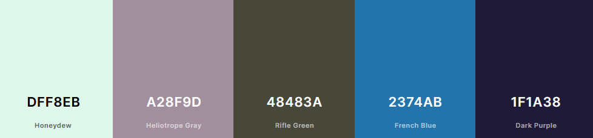

Color Scheme
Color Palette
The main colors used will be earthy blues, with green and purple accent colors.
- Honeydew: #DFF8EB
- Heliotrope Gray: #A28F9D
- Rifle Green: #48483A
- French Blue: #2374AB
- Dark Purple: #1F1A38
The main colors used will be earthy blues, with green and purple accent colors.